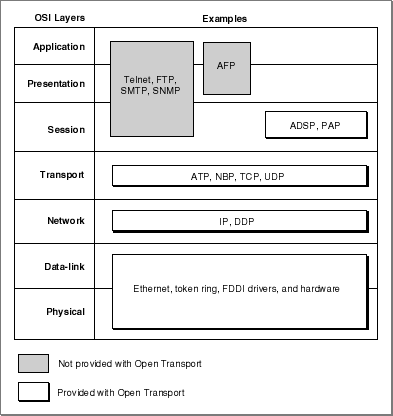

Legacy Document
Important: The information in this document is obsolete and should not be used for new development.
Important: The information in this document is obsolete and should not be used for new development.


Basic Networking Concepts
Although this book is intended for readers who already have some knowledge of networking fundamentals, many people use slightly different definitions for the same networking terms. Therefore, this section provides definitions of networking and communications terms as used in this book.A network is a system of computers and other devices (such as printers and modems) that are connected in such a way that they can exchange data.
A networking system consists of hardware and software. Hardware on a network includes physical devices such as Macintosh personal computer workstations, printers, and Macintosh computers acting as file servers, print servers, and routers; these devices are all referred to as nodes on the network.
If the nodes are not all connected to a single physical cable, special hardware and software devices must connect the cables in order to forward messages to their destination addresses. A bridge is a device that connects networking cables without examining the addresses of messages or making decisions as to the best route for a message to take. By contrast, a router contains addressing and routing information that lets it determine from a message's address the most efficient route for the message. A message can be passed from router to router several times before being delivered to its destination.
In order for nodes to exchange data, they must use a common set of rules defining the format of the data and the manner in which it is to be transmitted. A protocol is a formalized set of procedural rules for the exchange of information and for the interactions among the network's interconnected nodes. A network software developer implements these rules in software modules that carry out the functions specified by the protocol.
Whereas a router can connect networks only if they use the same protocol and address format, a gateway converts addresses and protocols to connect dissimilar networks.
A set of networks connected by routers or gateways is called an internet. The term Internet (note the capitalization) is often used to refer to the largest worldwide system of networks, also called the Worldwide Internet. The basic protocol used to implement the WorldWide Internet is called the Internet Protocol, or IP. Because the word internet is used in several different ways, it is important to note capitalization and context whenever you see this word.
A networking protocol commonly uses the services of another, more fundamental protocol to achieve its ends. For example, the AppleTalk Data Stream Protocol (ADSP) uses the Datagram Delivery Protocol (DDP) to encapsulate the data and deliver it over an AppleTalk network. The protocol that uses the services of an underlying protocol is said to be a client of the lower protocol; for example, ADSP is a client of DDP. A set of protocols related in this fashion is called a protocol stack. Protocol stacks are described in more detail in "Protocol Stacks and the OSI Model" .
- Note
- Although it is sometimes important to distinguish between a protocol and the software that implements the protocol, in most cases you can infer which is meant from the context. Accordingly, this book usually uses the term protocol rather than the more precise term protocol implementation to refer to the Open Transport implementation of a protocol.

Types of Protocols
Networking protocols can be characterized as connectionless or connection-oriented, and as transactionless or transaction-based.A connectionless protocol is one in which a node that wants to communicate with another simply sends a message without first establishing that the receiving node is prepared to receive it. Each message sent must include addressing information so that it can be delivered to its destination.
A connection-oriented protocol is one in which two nodes on the network that want to communicate must go through a connection-establishment process called a handshake. This involves the exchange of predetermined signals between the nodes in which each end identifies itself to the other. Once a connection is established, the communicating applications or processes on the nodes at either end can send and receive data without having to add addresses to the messages or repeat the handshake process. Connection-oriented protocols provide support for sessions. A session is a logical (as opposed to physical) connection between two entities on a network or internet. A session must be set up at the beginning, maintained by the periodic exchange of information, and broken down at the end. All of these services entail overhead compared to a connectionless protocol, for which no connection setup or breakdown is required and for which no session must be maintained.
A connection-oriented session is analogous to a telephone call. The party who initiates the call knows whether the connection is made because someone at the other end of the line either answers or not. As long as the connection is maintained, neither party needs to dial the other telephone number again. A connectionless protocol is analogous to mail. A person sends a letter expecting it will be delivered to its destination. Although the mail usually arrives safely, the sender doesn't know this unless the recipient initiates a response affirming it. Each letter sent by either party requires a complete address.
A transactionless protocol defines how the data is to be organized and delivered from one node to another. A connection-oriented transactionless protocol is used to maintain a symmetrical connection; that is, one in which both ends have equal control over the communication. Both ends can send and receive data and initiate or terminate the session. In this case, the connection is referred to as full duplex. If the two sides have to take turns transmitting and receiving, the connection is referred to as half duplex.
A connectionless transactionless protocol sends data in discrete datagrams. A datagram, also referred to as a packet, is a unit of data that includes a header portion that holds the destination address (and may contain other information, such as a checksum value) and a data portion that holds the message text. A connection-oriented transactionless protocol can send data as a continuous stream of data or, in some cases, as packets.
Low-level connectionless protocols such as DDP and IP usually provide best-effort delivery of data. Best-effort delivery means that the protocol attempts to deliver any packets that meet certain requirements, such as containing a valid destination address, but the protocol does not inform the sender when it is unable to deliver the data, nor does it attempt to recover from error conditions and data loss. Higher-level protocols, on the other hand, can provide reliable delivery of data. Reliable delivery includes error checking and recovery from error or loss of data.
A transaction-based protocol specifies the sequence and some of the content of messages passed between nodes. When using a transaction-based protocol, the application on one node, known as the requester, sends a request to the other application, known as the responder, to perform a task. The responder completes the task and returns a response that reports the outcome of the task. Once one node has issued a request, the receiving node is constrained to respond in a predefined way. A transaction-based connection is sometimes referred to as an asymmetrical connection.
Table 1-1 shows where some Open Transport protocols fit in the protocol-type matrix. A protocol of one type can be a client of a different type. For example, the connection-oriented transactionless AppleTalk Printer Access Protocol (PAP) is a client of the connectionless transaction-based AppleTalk Transaction Protocol (ATP), which is in turn a client of the connectionless transactionless Datagram Delivery Protocol (DDP).
The Open Transport protocol matrix and some Open Transport protocols Connectionless Connection-oriented Transactionless PPP
DDP
IP
UDPSerial connection
ADSP
TCP
PAPTransaction-based ATP ASP[1] Addressing
In order to establish a network connection or to send a message using a connectionless protocol, you must have the address of the destination. Each protocol uses a specific type of address, which might be the same as that used by a lower-level protocol in the protocol stack or might be unique to that protocol. DDP and IP, for example, use addresses sufficient for node-to-node delivery of datagrams, through routers if necessary. The protocols and applications that are clients of DDP are assigned socket numbers. A socket is a piece of software that serves as an addressable entity on a node. DDP is responsible for delivering a datagram to the correct socket.Similarly, IP delivers each datagram to a specific client protocol--such as Transaction Control Protocol (TCP) or User Datagram Protocol (UDP)--running on a specific node. The processes using the TCP/IP client protocols are each assigned a port number; the client protocol is responsible for delivering the datagram to the correct port number. Whereas AppleTalk normally assigns socket numbers dynamically to a process when it registers itself on the network, the TCP/IP port numbers are preassigned by convention or by previous arrangement between users.
For more information about AppleTalk addresses, see the chapter "AppleTalk Addressing" in this book. For more information about TCP/IP addresses, see the chapter "TCP/IP Services" in this book.
Protocol Stacks and the OSI Model
Most networking systems are designed as layered architectures in which low-level protocols provide services to higher-level protocols in the same protocol stack. Network designers relate each protocol to a reference model, which provides guidelines as to what sort of services should be provided by a protocol at a certain level in the hierarchy. Because these reference models provide a framework that makes it easier to compare the services offered by different protocols, this book shows how each protocol discussed relates to one or more reference models. In this section, the Open Systems Interconnection (OSI) model is described. The OSI model is a seven-layered standard that was published by the International Standards Organization (ISO) in the 1970s. This is the model with which the AppleTalk networking system architecture is most closely aligned.It is important to note that often more than one protocol is defined and implemented to handle the requirements of a layer in different ways. In addition, some protocols include functions that span more than one layer specified by a model. For example, in favor of efficiency, a network protocol developer may elect to define a single protocol that spans two or more layers of a reference model.
Figure 1-1 shows the layers of the OSI model and how the AppleTalk and TCP/IP protocols provided with the Open Transport system software fit into this model.
Figure 1-1 The OSI model and Open Transport protocols
Each layer of the OSI model has a specific purpose, as follows:
- The data-link layer and the physical layer provide for connectivity. The communication between networked systems can be via a physical cable made of wire or optical fiber, or it can be via infrared or microwave transmission. In addition to these, the hardware can include a network interface controller (NIC), if one is used. The hardware or transport media comprise the physical layer.
The physical hardware provides nodes on a network with a shared data transmission medium called a data link. The data-link layer includes both a protocol that specifies the physical aspects of the data link, and the link-access protocol, which handles the logistics of sending the data packet over the transport medium.
- The network layer specifies the network routing of data packets between nodes and the communications between networks, which is referred to as internetworking.
- The transport layer isolates some of the physical and functional aspects of a network from the upper three layers. It provides for end-to-end accountability, ensuring that all packets of data sent across the network are received and in the correct order. This is the process that is referred to as reliable delivery of data, and it involves providing a means of identifying packet loss and supplying a retransmission mechanism. The transport layer may also provide connection and session management services.
- The session layer serves as an interface into the transport layer, which is below it. The session layer allows for establishing a session, which is the process of setting up a connection over which a dialog between two applications or processes can occur. Some of the functions that the session layer provides for are flow control, establishment of synchronization points for checks and recovery during file transfer, full-duplex and half-duplex dialogs between processes, and aborts and restarts.
- The presentation layer assumes that an end-to-end path or connection already exists across the network between the two communicating parties, and it is concerned with the representation of data values for transfer, or the transfer syntax.
- The highest layer of the OSI model is the application layer. This layer allows for the development of application software. Software written at this layer benefits from the services of all the underlying layers.
[1] Open Transport does not currently provide an implementation of the AppleTalk Session Protocl (ASP).
Subtopics
- Types of Protocols
- Addressing
- Protocol Stacks and the OSI Model